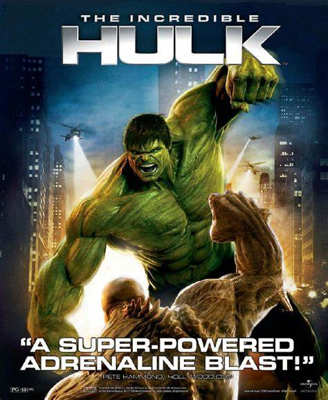
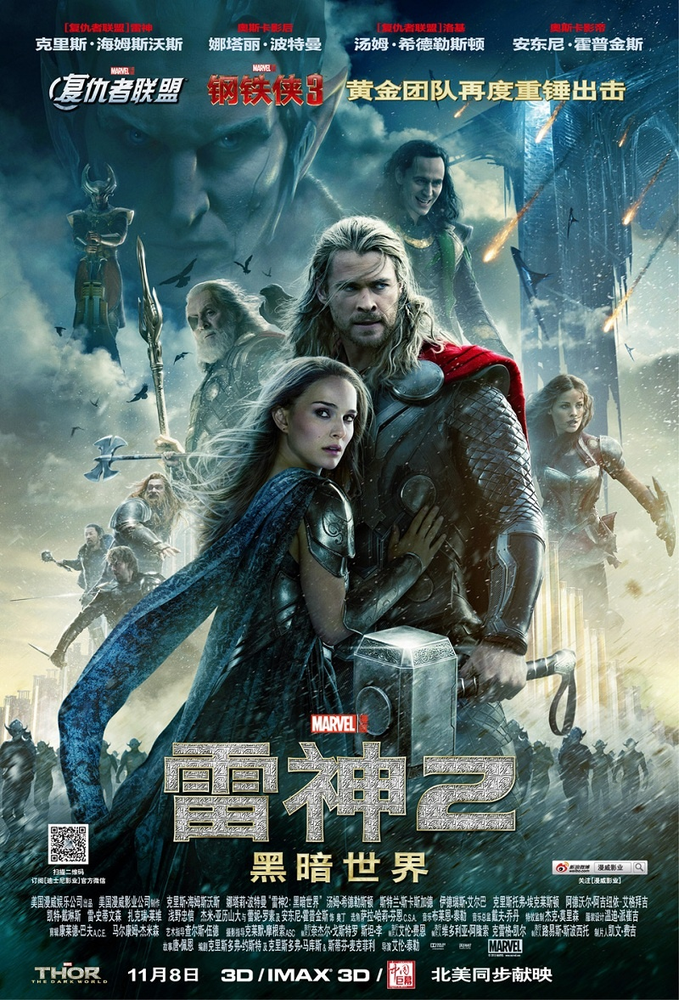

| ⚪寝室主页 | 名词解释： 漫威电影宇宙（Marvel Cinematic Universe，缩写为MCU），是由漫威影业基于漫威漫画角色制作的一系列电影组成的架空世界和共同世界。且电视剧系列进一步扩充了漫威电影宇宙。 |
|
|---|---|---|
| ⚪毒液 | ||
| ⚪钢铁侠 | ||
| ⚪绿巨人 | ||
| ⚪联系我们 |
|  | 电影推荐： |
| 电影 随着21世纪的到来，依靠飞速发展的计算机技术，在电影中真实的表现超级英雄终于成为可能——漫画改编的时机总算成熟了。福克斯和索尼先后凭借《X战警》系列、《蜘蛛侠》系列横扫美国票房。这两个大获成功的系列电影获得数十亿美元的全球票房，仅给作为品牌授权方的漫威带来不足1亿的票房分成。不想再为他人做嫁衣的漫威开始了自制超级英雄大片的道路，雄心勃勃的推出了漫威电影宇宙计划。 [2] 2008年起，依次将钢铁侠、绿巨人、黑寡妇、雷神、鹰眼、美国队长超级英雄搬上大荧幕，随后通过《复仇者联盟》将他们集结起来——在第一阶段，漫威凭借6部影片，以总计10亿美元的成本换回了高达37.4亿美元的全球票房。 [3] 第一阶段包括： 《钢铁侠》（2008年） 《无敌浩克》（2008年） 《钢铁侠2》（2010年） 《雷神》（2011年） 《美国队长：复仇者先锋》（2011年） 《复仇者联盟》（2012年）。 先拍各个角色的故事，后拍英雄战队复仇者联盟，这样各部影片的设定是统一的，还在各部影片中埋下相互联系的伏笔，形成一个统一的世界观。 [4] 第二阶段包括： 《钢铁侠3》（2013年） 《雷神2：黑暗世界》（2013年） 《美国队长2：冬日战士》（2014年） 《银河护卫队》（2014年） 《复仇者联盟2：奥创纪元》（2015年） 《蚁人》（2015年）。 第三阶段包括： 《美国队长3：内战》（2016年5月6日） 《奇异博士》（2016年11月4日） 《银河护卫队2》（2017年5月5日） 《蜘蛛侠：英雄归来》（2017年7月7日） [5] 《雷神3：诸神黄昏》（2017年11月3日） 《黑豹》（2018年2月16日） [6] 《复仇者联盟3：无限战争》（2018年4月27日） [7-8] 《蚁人2：黄蜂女现身》（2018年7月6日） [9-10] 《惊奇队长》（2019年3月8日） 《复仇者联盟4：终局之战》（2019年4月26日） [11] 《蜘蛛侠：英雄远征》（2019年7月2日） [12-13] 。 2019年3月，漫威影业主席凯文·费奇宣布，从2008年的《钢铁侠》，到2019年的《复仇者联盟4：终局之战》，漫威电影宇宙在11年里拍摄的22部电影（前三阶段除去《蜘蛛侠：英雄远征》的所有电影）统称为“无限传奇”（The Infinity Saga） [14] 。 2019年7月，漫威影业公布了第四阶段的一系列影片计划（第四阶段包括电视剧）： 《黑寡妇》（2021年7月9日） [1] [15-16] [103] 《尚气与十环传奇》（2021年9月3日） [1] [16] [103] 《永恒族》（2021年11月5日） [1] [16-17] 《蜘蛛侠：英雄无归》（2021年12月17日） [18-19] 《奇异博士2》（2022年5月6日） [16] [19-20] [129] 《雷神4：爱与雷霆》（2022年7月8日） [16] [19] [129] 《黑豹2》（2022年11月11日） [21] [129] 《惊奇队长2》（2023年2月17日） [16] [129] 《银河护卫队3》（2023年5月5日） [22] [110] 《蚁人3》（2023年7月28日） [110] [129] 《神奇四侠》（尚未公布） [110] 未来项目 《刀锋战士》（尚未公布） 《变种人》（尚未公布） [106] 《死侍3》（尚未公布） [109] 《美国队长4》（尚未公布） [107] 等。 迪士尼+系列剧 2018年9月，报道漫威影业正在开发多部限定剧，均会以MCU电影的二线角色为中心。这一系列新剧集会和包括《神盾局特工》、《特工卡特》、《超胆侠》、《杰茜卡·琼斯》、《卢克·凯奇》、《铁拳》、《捍卫者联盟》、《惩罚者》、《离家童盟》、《斗篷与匕首》、《地狱风暴》等的漫威美剧在一定程度上有区别 ，将投入大量资金，甚至能与MCU的电影相提并论。 2019年7月起，漫威影业陆续公布了一系列原创系列剧的上映计划： 《旺达·幻视》（2021年1月15日） [23] 《猎鹰与冬兵》（2021年3月19日） [24] 《洛基第一季》（2021年6月9日） [25] [111] [130] MCU首部动画系列剧《假如…？》（2021年8月6日） [112] 《鹰眼》（2021年11月24日） [127] 《惊奇女士》（尚未公布） 《月光骑士》（尚未公布） 《女浩克》（尚未公布） 《秘密入侵》（尚未公布） 《钢铁之心》（尚未公布） 《装甲战争》（尚未公布） 《银河护卫队：圣诞特别篇》（尚未公布） 《我是格鲁特》（尚未公布） 《洛基第二季》（尚未公布） [85] 《回声》（尚未公布） [100] 蜘蛛侠动画剧集《蜘蛛侠：第一年》（尚未公布） [128] X战警动画剧集《X-Men '97》（2023年） [128] 动画剧集《漫威僵尸》（尚未公布） [128] 《阿加莎》（尚未公布） [128] 动画剧集《假如…？第二季》（尚未公布） [128] 《瓦坎达王国》（尚未公布） [26-27] 。 |